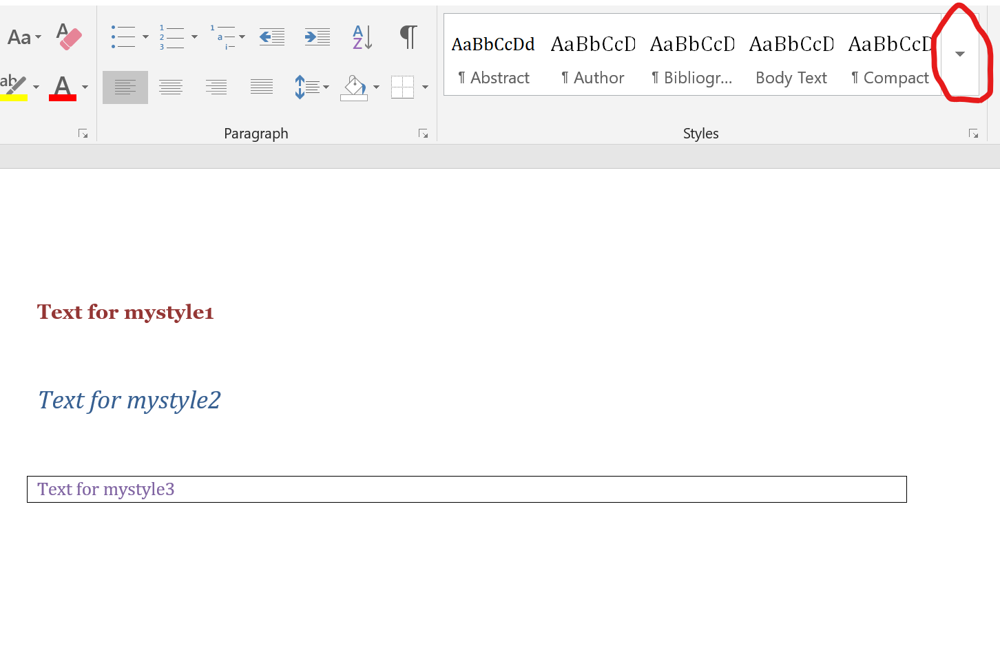
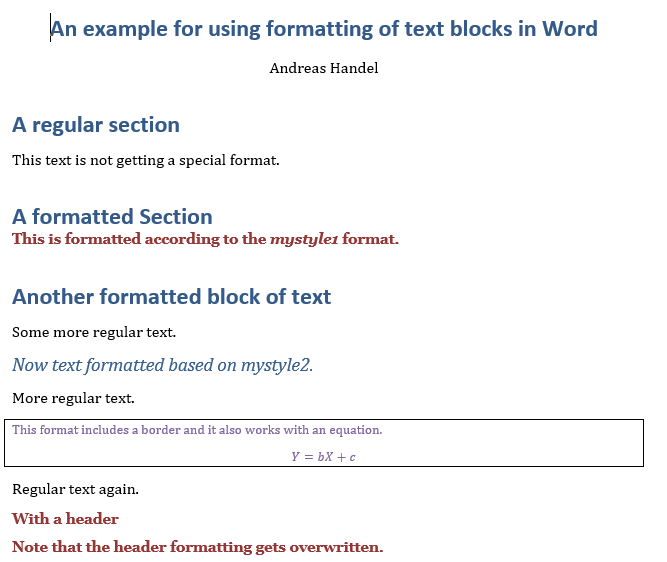

A good while back (around 2 years as of this writing), I needed the feature to turn an R Markdown document into a Word document (that’s easy) and to apply custom styles to specific parts of the Word document (that was trickier). I found some good information in this RStudio article, but it didn’t quite address everything I was looking for.
Specifically, I wanted to find a way to format certain parts of the R Markdown document in a specific style. I asked online and got some help from JJ Allaire (yes, the guy who started RStudio). Then recently, Dean Attali (yes, the guy who does a lot of cool Shiny stuff) posted a reply asking for an example. I tried to dig out the 2 year old project (it turns out I ended up not needing it for that project and haven’t used it since).
As I was trying to contemplate how to best share the example with Dean, I figured I might turn it into a brief blog post, which might be of benefit to others. So here goes.

Start a new Rmarkdown document. Your YAML header should look something like this:
---
title: "An example for using formatting of text blocks in Word"
author: "Andreas Handel"
documentclass: article
site: bookdown::bookdown_site
output:
bookdown::word_document2:
toc: false
reference_docx: wordstyletemplate.docx
---Note that I’m using bookdown as the output format here, but any others that can produce word output, e.g. the standard R Markdown format, should work equally well. The important part is the last line, which specifies the word document with the custom styles you created in the previous step.
You can now assign text blocks in your R markdown file specific styles. Here I created 3 styles called mystyle1/mystyle2/mystyle3 in the Word doc, and assign them to specific parts of the text. This example markdown text shows how to use the styles.
# A regular section
This text is not getting a special format.
# A formatted Section
:::{custom-style="mystyle1"}
This is formatted according to the _mystyle1_ format.
:::
# Another formatted block of text
Some more regular text.
:::{custom-style="mystyle2"}
Now text formatted based on _mystyle2_.
:::
More regular text.
:::{custom-style="mystyle3"}
This format includes a border and it also works with an equation.
$$Y = bX + c$$
:::
Regular text again.
::: {custom-style="mystyle1"}
# With a header
Note that the header formatting is overwritten.
:::The resulting word document looks like this:

One thing you see in this example is that your own styles overwrite all others, so headers inside your custom style will just be formatted like your custom style. Some other quirks I noticed is that you seem to need empty lines before and after your custom style block. I seem to remember that formatting of R chunks works ok, but I also seem to recall that sometimes manual intervention is required.
Overall, this approach gives you a good deal of flexibility for applying styling to your Word documents when writing in R Markdown, but there might still be some kinks. As I mentioned in the beginning, I ended up not using it for the project I had intended to use it (a review paper I wrote), so I don’t have a lot of real world experience beyond what I’m describing here.